Tutoriel : Utiliser ROS2 via Matlab
Table des matières
Introduction
Ce tutoriel vise à mettre en pratique les connaissances acquises lors du tutoriel précédent en intégrant ROS2 et turtlesim de manière cohérente avec Matlab. Pour ce faire, nous allons revoir les concepts de ROS2 et de turtlesim, ainsi que présenter Matlab et Simulink.
ROS2 : ROS (Robot Operating System) est un middleware qui agit comme une interface entre les applications et les bases de données ou les systèmes d'exploitation. ROS2, la nouvelle version de ROS, partage des composants similaires à sa version précédente, mais avec une architecture fondamentalement différente. Basé sur des systèmes distribués en temps réel, ROS2 consiste en des nœuds effectuant divers calculs ou opérations simples, connectés en réseau temps réel. Contrairement à ROS, ROS2 utilise le protocole réseau DDS (Data Distribution Service) pour simplifier la programmation réseau. Chaque nœud créé sous ce protocole, agit en tant que Publisher et Subscriber et est automatiquement créé sur un sous-réseau spécifique appelé domaine, permettant une connexion réseau plus simple et sécurisée.
TurtleSim : Turtlesim sert d'outil d'apprentissage pour ROS et ROS2, offrant une approche pratique des concepts associés. Cet outil simule un espace où plusieurs tortues peuvent se déplacer, permettant l'accès à différents topics, services et actions pour contrôler ces tortues et collecter les données disponibles. Bien que simple en apparence, turtlesim constitue une première introduction aux concepts de ROS et ROS2, sans risquer de perturber un système réel.
Matlab/Simulink: Matlab est une plateforme de calcul numérique et de programmation, offrant diverses bibliothèques appelées toolboxs pour une utilisation dans des domaines tels que l'ingénierie, les sciences et l'économie. Elle propose notamment une toolbox ROS qui sera utilisée dans ce tutoriel. D'autre part, Simulink est une plateforme de simulation et de modélisation de systèmes dynamiques, présentée comme un environnement de schémas en blocs, étroitement associée à Matlab pour simplifier la programmation des systèmes dynamiques à modéliser.
Connecter Matlab à un réseau ROS2
Avant de débuter ce guide, si vous rencontrez un problème avec l'une des commandes utilisées ici, il est probable que l'installation des prérequis pour l'utilisation de Matlab avec ROS2 n'ait pas été correctement effectuée. Dans ce cas, il vous suffit de consulter le tutoriel Installation des prérequis à l'utilisation de Matlab avec ROS2.
ROS2 opère via un protocole réseau appelé DDS (Data Distribution Service). Ce protocole crée des domaines distincts au sein d'un même sous-réseau, chacun étant identifié par un ID différent. Ces domaines ne sont pas interconnectés et ne peuvent pas échanger de données entre eux.
Contrairement à ROS, ROS2 ne possède pas de ROS Master ; les nœuds établissent automatiquement des connexions entre eux s'ils se trouvent dans le même sous-réseau et le même domaine. Afin de connecter Matlab à un réseau ROS2, il suffit de créer un nouveau nœud depuis Matlab dans le même sous-réseau et le même domaine, et la connexion s'établira automatiquement entre les deux.
Vérifier le domaine ROS2 dans le fichier .bashrc
-
Lancez un premier terminal dans la machine virtuelle ROS2 et modifiez le fichier
~/.bashrc:cd ~ sudo nano .bashrc
-
Vérifiez qu'il existe un domaine ROS2 de défini à la fin du fichier avec la ligne suivante :

-
Si ce n'est pas le cas, ajoutez cette ligne en choisissant un ID qui n'est pas encore utilisé par une autre personne sur le même sous-réseau.
-
Si cette ligne existe déjà, retenez l'ID qui y est écrit.
-
-
Vous pouvez alors quitter le fichier .bashrc avec la commande
ctrl+Xet enregistrer les changements si vous avez dû ajouter la définition du domaine.
Ouvrir Matlab et créer un premier nœud sur le bon domaine
-
Ouvrez alors Matlab.
-
Observez la structure de la commande
setenv. Cette commande permet de définir le domaine sur lequel sera connecté Matlab. Voici la structure de la commande :.png)
-
Utilisez cette commande, dans Matlab, en choisissant le même domaine que la VM ROS2 :
setenv("ROS_DOMAIN_ID","0")
S'il n'y a pas d'erreur, Matlab doit maintenant avoir accès au bon domaine ROS2 et il nous reste plus qu'à tester tout ceci.
Lancer turtlesim et vérifier que Matlab se connecte bien au réseau ROS2
-
Commencez par lancer turtlesim dans un terminal avec la commande suivante :
ros2 run turtlesim turtlesim_node

-
Observez la structure de la commande
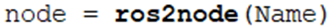ros2node. cette commande permet de créer un nœud grâce à Matlab, ce qui nous permettra de nous connecter au réseau ROS2 et de le découvrir. Voici la structure de la commande : -
Créez alors un nœud "
/default_Node" comme suit, depuis Matlab :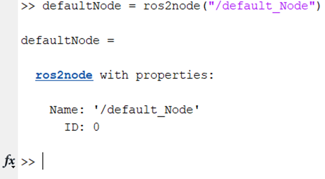defaultNode = ros2node("/default_Node")Vérifiez alors que l'ID correspond bien à l'ID du domaine qui a été défini plus haut.
-
Visualisez les noeuds ROS2 depuis Matlab pour vérifier que Matlab soit bien connecté au réseau ROS2. On peut alors dresser une liste des nœuds ROS2 depuis Matlab, et vérifier que turtlesim s'y trouve bien. On utilise alors la commande suivante :
ros2 node list

On observe bien que turtlesim apparait dans la liste des nœuds. Matlab est donc bien connecté au réseau ROS2.
Utiliser le service /kill avec Matlab
Dans la présente section, nous allons examiner les services et étudier leur utilisation avec Matlab. Nous débuterons par répertorier les services accessibles sur turtlesim à partir de Matlab.
Trouver le type de ce service sur Matlab
-
Utilisez la commande suivante dans Matlab, pour voir la liste des services actifs :
ros2 service list

On observe alors que les 6 premiers services sont pour Matlab, et que les autres sont ceux que nous avons déjà vu dans les précédents tutoriels. Ce sont donc ces derniers qui vont nous intéresser.
-
Pour faire disparaître la tortue, il faut utiliser le service
/kill. Pour se connecter à un service ROS2, il faut créer un client de service. Or, pour crée un client de service, on doit d'abord connaître le type du service que nous voulons utiliser. -
Tapez la commande suivante dans Matlab :
ros2 msg list

-
Vérifiez que les messages suivants sont disponibles :

-
Si ces commandes sont présentes, vous pouvez passer à la suite.
-
Si ce n'est pas le cas, reprenez le tutoriel Tutoriel : Installation des prérequis à l'utilisation de Matlab avec ROS2.
-
-
Observez la liste précédente, et vous pourrez voir :

Malheureusement, Matlab a des règles particulières en termes de notation, et lors de l'appel à un service, il va rajouter lui-même le terme "
Request" à la fin du type de service. Le type de service, correspondant au service "/kill", à envoyer sera donc "turtlesim/Kill".
Lancer le client de ce service
-
Retournez dans Matlab et observez la commande
ros2svcclientpour créer un client de service :
-
Utilisez la commande
ros2svcclientpour créer notre client de service :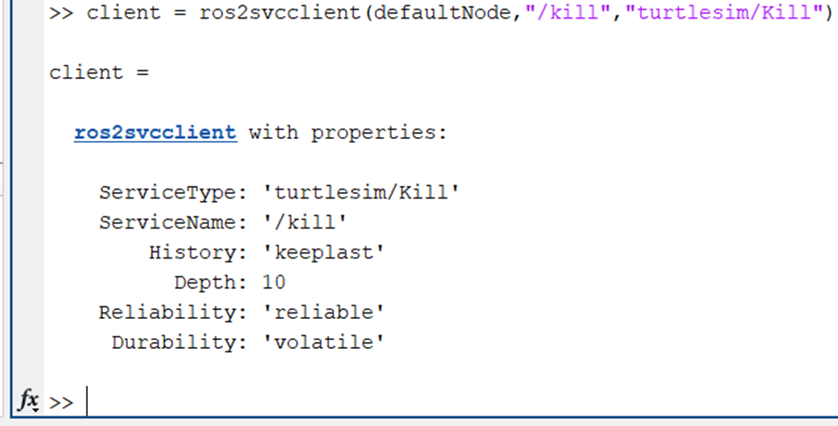client = ros2svcclient(defaultNode,"/kill","turtlesim/Kill")
Notre client de service est maintenant créé. Passons donc à la création du message à envoyer au service.
Créer le message à envoyer au service
Pour cela nous allons utiliser une des capacités de Matlab, qui est de créer directement un message de type adapté à un client de service.
-
Observez la structure de la commande suivante :
.png)
Elle permet de renvoyer différentes informations sur le type de message de client.
-
Tapez la commande suivante :
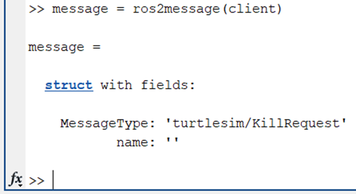message = ros2message(client)
On voit bien que le message est bien du type voulu, mais que le
nameest vide. Pour cela, nous allons donner le nom de la tortue que nous voulons faire disparaître, qui est "turtle1". -
Nous pouvons donc utiliser la commande suivante pour lui attribuer le nom
turtle1: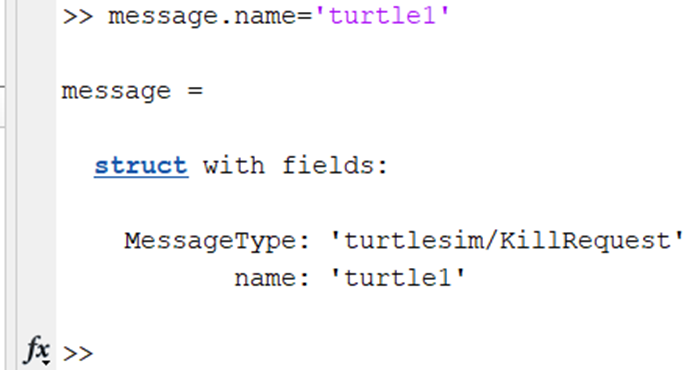message.name = 'turtle1'
Le message possède maintenant le nom de notre tortue.
Envoyer le message au service
-
Envoyez ce message via le client créé plus tôt. Pour cela, nous allons utiliser la commande
call. Observez la structure de la commande suivante :.png)
-
Utilisez cette fonction
call: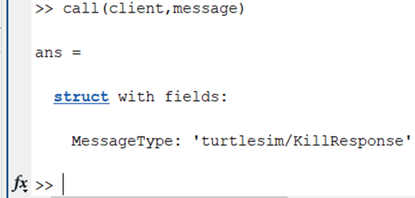call(client,message)
-
Observez la fenêtre TurtleSim. La tortue a bien disparu :

Utiliser le service /spawn avec Matlab
Nous allons maintenant reprendre les mêmes étapes mais cette fois-ci pour recréer notre tortue avec le service /spawn.
Trouver le type de ce service sur Matlab
-
Vous pouvez voir ce service dans la liste des services :
ros2 service list

-
Cherchez le type de ce service dans la liste services et type :
ros2 msg list
-
Vous devriez trouver ce type :
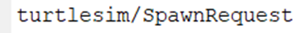
Lancer le client de ce service
Créez le client de service avec la commande suivante :
client2 = ros2svcclient(defaultNode,"/spawn","turtlesim/Spawn")
Créer le message à envoyer au service
Pour cela nous allons utiliser une des capacités de Matlab qui est de créer directement un message de type adapté à un client de service.
-
Créez le message correspondant à ce service avec la commande suivante :
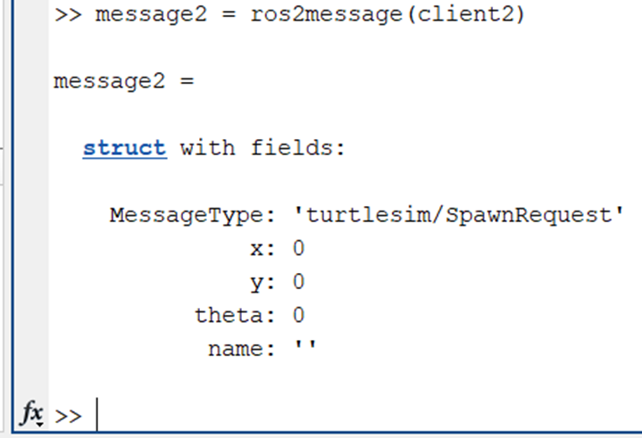message2 = ros2message(client2)
En plus du nom, nous allons donner une position de base à notre tortue. Le centre de l'image se trouve à la position
(x,y,theta) = (5.54,5.54,0). Nous allons donc faire apparaître notre tortue à ce point avec cette orientation. Comme le type demandé est unsingleet que Matlab crée automatiquement des nombres de typedouble, il faudra précisersinglelors du paramétrage de la position. -
Fournissez les trois commandes suivantes pour paramétrer le message :
message2.x = single(5.54)
message2.y = single(5.54)
message2.name = 'turtle1'


-
Vous obtiendrez donc dans la console le récapitulatif du message construit :

Envoyer le message au service
-
Envoyez ce message via le client, créé plus tôt. Utilisez la fonction
call: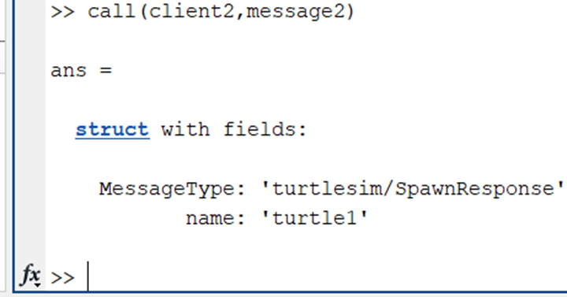call(client2,message2)
-
Observez la fenêtre TurtleSim. La tortue a bien apparu :
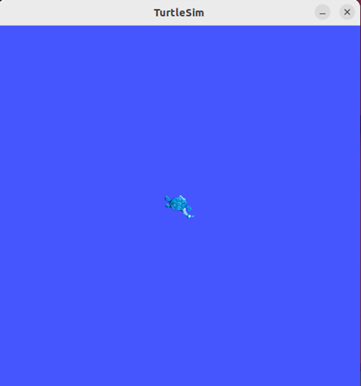
Créer un Publisher et un Subscriber
Regardons maintenant comment marchent les Publishers et Subscriber avec Matlab. Les Publishers et Subscriber ont besoin de topics pour fonctionner, et chacun des topic possède un ou plusieurs types de messages qui peuvent être utilisés.
Vérifier la liste des topics
-
Vérifier que TurtleSim est toujours lancé dans la machine virtuelle. Si ce n'est pas le cas, ouvrez un terminal et tapez la commande :
ros2 run turtlesim turtlesim_node
-
La liste des topics peut être vue en utilisant la commande suivante dans Matlab :
ros2 topic list

-
De plus, les types de messages qui peuvent être utilisés sont visibles grâce à la commande suivante dans Matlab:
ros2 msg list

Créer le message
Dans cette première partie, nous allons créer deux messages qui serviront à l'envoi et à la réception de messages pour communiquer entre Matlab et turtlesim.
-
Créez un message qui s'appellera "
twist" et qui sera de type "geometry_msgs/Twist". Pour cela, nous allons utiliser la commanderos2 messagemais cette fois en utilisant directement le type "geometry_msgs/Twist" :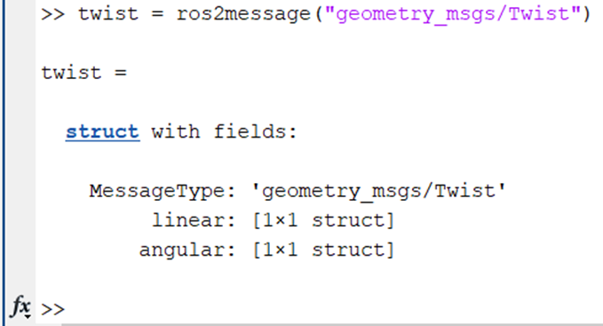twist = ros2message("geometry_msgs/Twist")Rappel : les messages du type
geometry_msgs/Twistsont des messages composés de deux vecteurs de dimension 3 chacun. Le premier vecteur correspond au vitesses linéraires selonx, yetz. Le second vecteur correspond au vitesses angulaires selonx, yetz! -
Assignez la valeur
2comme vitesse linéaire selon x et assignez la valeur1.58comme vitesse angulaire selon z. Pour cela, nous allons utiliser les commandes suivantes :twist.linear.x = 2
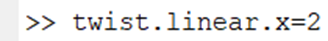 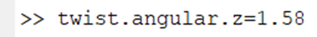twit.angular.z = 1.58
-
Créez un second message, que nous appellerons "
pose" et qui sera de type "turtlesim/Pose". La commande à utiliser est donc la suivante :pose = ros2message("turtlesim/Pose")
Ce message servira à récupérer la position de la tortue. Nous n'avons donc pas besoin de lui assigner de valeur.
Créer un publisher
Pour envoyer un message sur un topic, nous aurons besoin d'un Publisher. Nous allons donc en créer un. Nous avons vu dans le premier tutoriel que le topic sur lequel il faut publier des messages de façon à faire bouger la tortue est le topic "turtle1/cmd_vel". Les messages acceptés par ce topic doivent être de type geometry_msgs/Twist. On va alors créer un Publisher qui se connecte au bon topic avec le bon type de données
-
Créez un publisher avec la commande
ros2publisher. Observez la structure de la commande :
-
Utilisez cette commande pour créer le publisher :
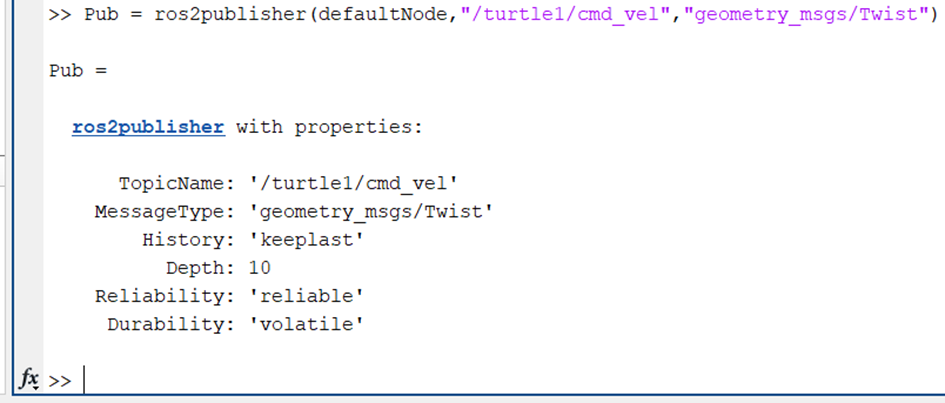Pub = ros2publisher(defaultNode,"turtle1/cmd_vel","geometry_msgs/Twist")
Nous disposons maintenant d'un nœud defaultNode qui devrait avoir accès au topic
turtle1/cmd_velpour publier des données. -
Vérifiez la création de votre publisher en ouvrant un terminal dans la machine virtuelle et en lançant
rqt_graph:rqt_graph
-
Vous obtenez alors le graphique suivant :

Vous pouvez vérifier que le nœud
/default_Nodea maintenant accès au topic/turtle1/cmd_vel.
Créer un subscriber
Maintenant, nous voulons créer un Subscriber car nous voulons récupérer la position de notre tortue. Pour cela, nous allons le connecter au topic "turtle1/pose".
-
Créez un subscriber avec la commande
ros2subscriber. Observez la structure de la commande :
-
Utilisez cette commande pour créer le subscriber :
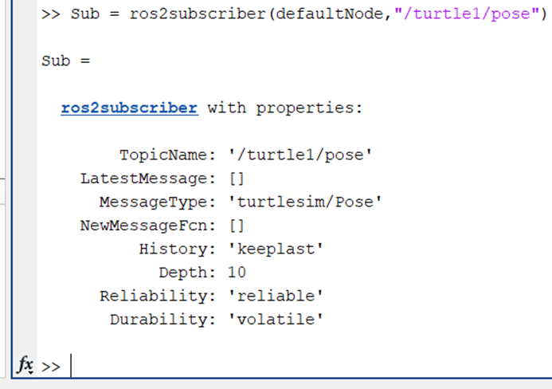Sub = ros2subscriber(defaultNode,"/turtle1/pose")
-
Mettez à jour la fenêtre
rqt_graph. Si votre subscriber a bien été créé, vous devriez pouvoir le voir :
On observe bien que notre nœud
/default_Nodepeut maintenant récupérer des données provenant du topicturtle1/pose.
Nous avons alors tout ce dont nous avons besoin pour commencer à échanger des messages entre Matlab et turtlesim.
Echanger des données en continu avec le réseau ROS2
Envoyer des données à un réseau ROS2
Nous allons commencer par envoyer le message twist que nous avions précédemment via le Publisher Pub.
-
Observez la structure de la commande pour envoyez un message :

-
Utilisez cette commande pour créer le subscriber :
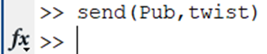send(Pub,twist)
-
Observez la fenêtre TurtleSim. Vous devriez voir la tortue bouger sous la forme d'un arc de cercle (mouvement typique d'une vitesse linéaire selon x et angulaire selon z) :
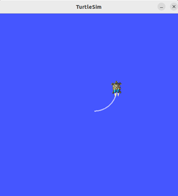Afin de vérifier que tout se passe correctement lors de l'envoi de messages, vous pouvez modifier les valeurs de
twistet le renvoyer grâce à la commandesend(), ci-dessus, pour observer les différents mouvements de la tortue. (Rappel : Les seules vitesses valables pour la tortue sont les vitesses : linéaires sur x et y et angulaire sur z)
Récupérer des données depuis un réseau ROS2
Nous allons maintenant essayer de récupérer la position de notre tortue. Pour cela, nous utiliser le Subscriber Sub et mettre la valeur qu'il va renvoyer dans le message pose.
-
Récupérez les données avec la commande
receive. Observez la structure de la commande :
-
Utilisez cette commande pour récupérer les données :
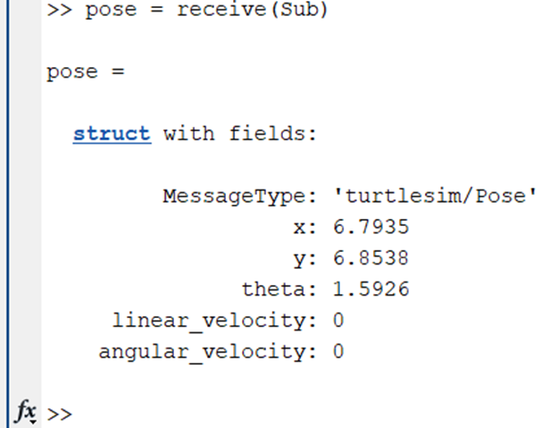pose = receive(Sub)
On peut alors observer la position de notre tortue, qui a les coordonnées suivantes :
x = 6.7935y = 6.8538θ = 1.5926 rad
De plus, comme notre tortue est à l'arrêt (pour le moment), sa vitesse linéaire selon x et sa vitesse angulaire selon z sont nulles.
Envoyer et recevoir les infos en continu avec des scripts Matlab
Nous avons donc réussi à échanger des messages entre Matlab et ROS2, mais l'envoi et la réception de données depuis le terminal Matlab ne permet pas une application réelle. Nous allons donc faire en sorte d'envoyer et recevoir en continu des messages entre les deux.
-
Commencez par créer un script Matlab avec l'icône situé dans le coin supérieur gauche :

-
Commencez à créer le programme. Pour cela, nous allons reprendre les éléments que nous avons utilisé dans le terminal et les organiser en ajoutant une boucle "infinie".
Le programme à écrire se présentera donc comme suit (Vous trouverez le code en Annexe 1) :
Il faut bien penser à ne pas mettre de point-virgule à la ligne 14, comme nous souhaitons que la valeur de pose soit affichée dans le terminal.
Explication du programme :
- Le
clearajouté au début (ligne 1) permet de nettoyer/effacer les autres variables qui peuvent avoir été créées. - Un nœud qui permet d'établir la connexion avec ROS2 est créé (ligne 3).
- Les messages
twistetposesont créés (ligne 5 et 6), et on attribue les différentes valeurs àtwist(lignes 7 et 8). - Le Publisher et le Subscriber sont créés (lignes 10 et 11).
- Boucle infinie où on récupère la position, on attend 0.3 seconde, et on envoie notre message (lignes 13-17).
- Le
-
Lancez le programme en appuyant sur la touche "
F5" ou en appuyant sur la flèche verte en haut de l'écran. On devrait normalement observer que la tortue se met à bouger et sa position est écrite dans le terminal toutes les 0.3 seconde :
Pour arrêter le programme, il faut utiliser le carré rouge situé en haut à droite ou bien utiliser la commande « Maj+F5 ».
Créer et utiliser une action
Tout comme pour ROS, les actions sont disponibles sur ROS2. Cependant, leur implémentation à l'aide de Matlab nécessiterait un tutoriel supplémentaire car leur création est séparée en deux parties : les serveurs d'actions et les clients d'actions. La partie serveur d'action n'existant que depuis la dernière version de Matlab, les exemples ne sont pas très variés, et la documentation est limitée à celle fournie par Mathworks. Nous nous contenterons donc de créer un client d'action et de le lier à l'action rotate_absolute de turtlesim comme vu dans le tutoriel Noeuds, Topics, Services et Actions.
Créer le client d'action
Fermez tous les terminaux dans la VM. Relancez un seul terminal dans lequel vous allez lancer turtlesim. (Rappel :
$ ros2 run turtlesim turtlesim_node)-
Regardez la liste des actions accessibles pour turtlesim. Pour cela, nous allons utiliser la commande suivante :
ros2 action list

On remarque qu'il n'y a qu'une seule action de disponible.
-
Trouvez maintenant le type de message de cette action. Utilisez la commande :
ros2 msg list

Vous obtiendrez :

Puisque le seul type de message qui correspond à un serveur d'action est le
Goal, nous allons utiliser la partie centrale du type de message. Cependant, à l'instar des services, Matlab ajoute automatiquement le termeGoalà la fin du type de message, nous aurons donc simplement à spécifier le début du type de message. -
Créez notre client d'action avec la commande
ros2actionclient. Observez la structure de la commande :
-
Utilisez cette commande :
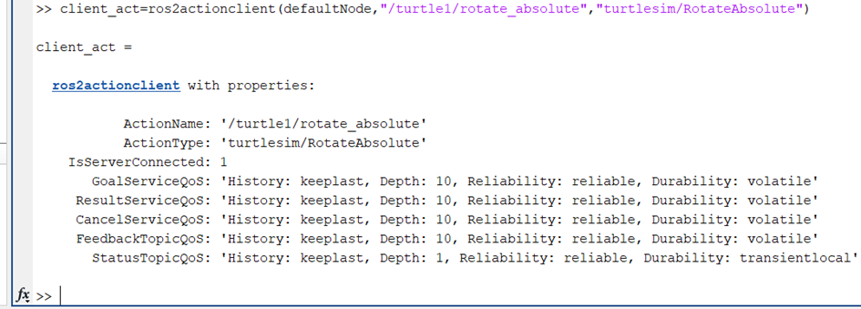client_act = ros2actionclient(defaultNode,"/turtle1/rotate_absolute","turtlesim/RotateAbsolute")
-
Créez le message :
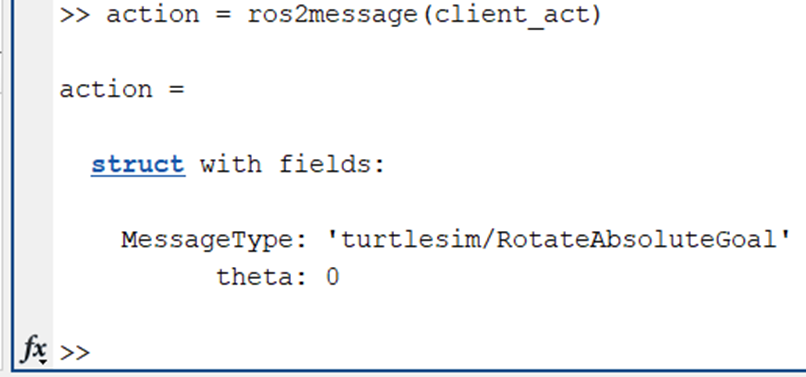action = ros2message(client_act)
On remarque bien que le message est du type voulu.
-
Donnez une valeur à
theta, par exemple1.57 rad.thetaest de typesingle, il ne faut donc pas oublier de le préciser dans le paramétrage du message avec la fonctionsingle():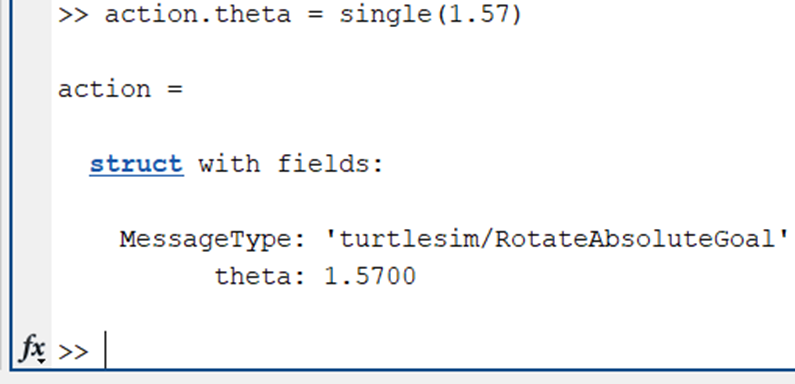action.theta = single(1.57)
Récupérer le feedback et le résultat de l'action
Récupérez le feedback et le résultat de l'action. Pour cela nous allons créer deux fonctions qui serviront à afficher l'avancée d'une action et le résultat.
Réaliser une action
-
Observez la commande suivante pour définir les options de l'action :

-
Utilisez cette commande :
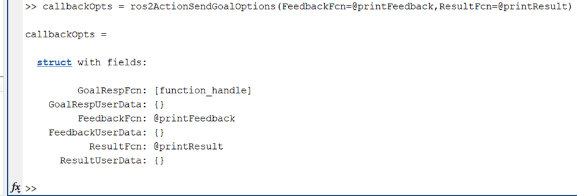callbackOpts = ros2ActionSendGoalOptions(FeedbackFcn=@printFeedback,ResultFcn=@printResult)
-
Observez la commande « sendGoal » pour envoyer l'action :

-
Utilisez cette commande :
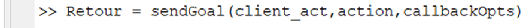Retour = sendGoal(client_act,action,callbackOpts)
-
Vérifiez que le résultat obtenu est une suite de Feedback qui comporte la rotation restante à effectuer, et un résultat qui indique la rotation totale de la tortue :

-
Observez la fenêtre turtlesim. La tortue a bougée, et elle est maintenant dans cette position :
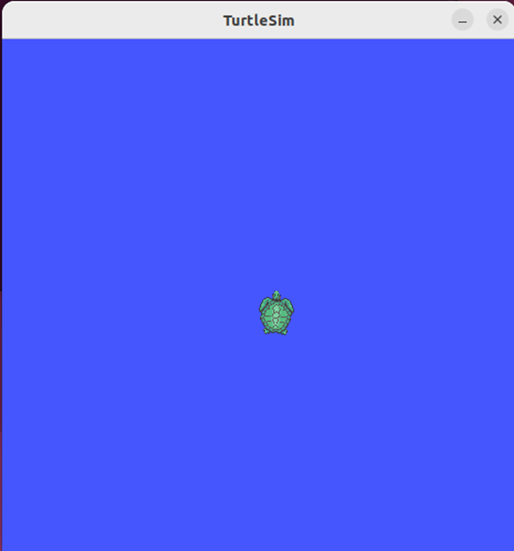
Vous venez donc d'envoyer un message sur un client d'action via Matlab.
Créer un Publisher et un Subscriber sur Simulink
L'utilisation des Subscribers est actuellement compliquée car "turtlesim/Pose" est un type de message qui doit être ajouté manuellement à la bibliothèque Matlab.
Ouvrir un nouveau projet Simulink
-
Avant de commencer, utilisez la commande
cleardans le terminal Matlab pour nettoyer/effacer les variables :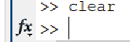clear
-
Fermez ensuite tous les terminaux ROS2 dans la VM et ouvrez en un nouveau, dans lequel vous lancerez turtlesim :
ros2 run turtlesim turtlesim_node
-
Lancez alors Simulink grâce au bouton "Simulink" dans le menu "Home" de Matlab :

-
Choisissez ensuite un "Blank Model" (i.e. modèle vide) :

-
Relancez un nœud dans le terminal Matlab afin de recréer la communication avec le réseau ROS2 :
defaultNode = ros2node("/default_Node")
Créer le schéma bloc sur Simulink
-
Retournez sur la fenêtre Simulink et ouvrez le gestionnaire de bibliothèques. Cliquez sur :

-
Allez dans le répertoire ROS Toolbox puis ROS 2 :

-
Récupérez un bloc "Blank Message" et un bloc "Publish" :


Vous pouvez utiliser la méthode "drag and drop" depuis le gestionnaire de bibliothèques jusqu'à votre page Simulink.
-
Ajoutez un bloc "Bus Assignment". Il est possible d'utiliser la barre de recherche de l'onglet "Library Browser" pour rechercher des blocs. Utilisez cette barre de recherche pour chercher ce bloc :

Faites un drag and drop pour ajouter le bloc.
-
Ajoutez 2 blocs "Constant". Faites la recherche pour le bloc "Constant" et placez-en deux :

-
Reliez le bloc "Blank Message" avec le bloc "Bus Assignment" et le bloc "Bus Assignment" et le bloc "Publish" comme ci-dessous :

Paramétrer les différents blocs
-
Paramétrez les blocs "Blank Message" et "Publish".
Commençons par le bloc "Blank Message". Double-cliquez dessus, une fenêtre "Block Parameters" va s'ouvrir. Modifiez ensuite le type
geometry_msgs/Twisten cliquant sur le boutonSelect ...:
Enregistrez les modifications en appuyant sur "Apply" puis fermez la fenêtre de paramètres en cliquant sur "OK".
Modifiez les paramètres du bloc "Publish" et enregistrez les modifications :

-
Modifiez la valeurs des blocs "Constant" en leur donnant respectivement 1.58 et 2 comme valeur.
-
Paramétrez le bloc "Bus Assignment" comme ci-dessous :

Vous pourrez voir que le bloc à changé. C'est à dire qu'en entrée vous avez les valeurs
linear.xetangular.zqui sont apparu. Cela nous permettra de donner une valeur au message de typegeometry_msgs/Twistque nous enverrons sur le topic/turtle1/cmd_velpour faire bouger la tortue. -
Reliez les blocs blocs entre eux et vous devriez obtenir ce montage :
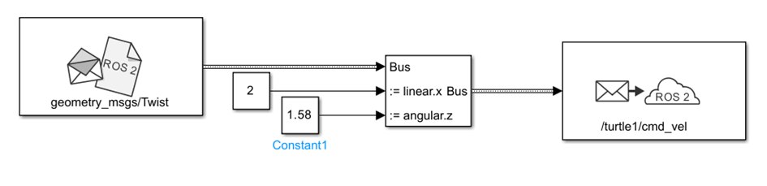
Envoyer les messages via Simulink
-
Appuyez sur le bouton "Run" en haut de la fenêtre Simulink. Cela enverra le message que vous venez de créer sur le topic
/turtle1/cmd_velde la tortue et l'a fera bouger :
-
Vous devriez voir la tortue bouger dans la fenêtre TurtleSim (Dans la VM ROS2) :
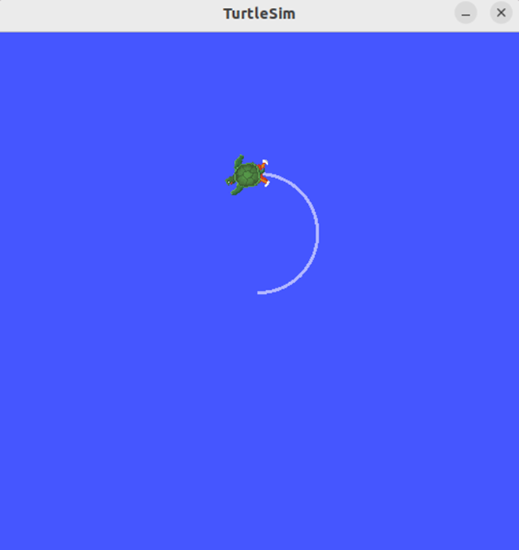Ceci conclut donc cette partie Publisher depuis Simulink.
Ajouter le subscriber sur schéma bloc de Simulink
-
Retournez sur la fenêtre Simulink et ouvrez à nouveau le gestionnaire de bibliothèques avec :
-
Allez dans le répertoire ROS Toolbox puis ROS 2 :
-
Récupérez un bloc "Subscribe" :

Vous pouvez utiliser la méthode "drag and drop" depuis le gestionnaire de bibliothèques jusqu'à votre page Simulink.
-
Ajoutez un bloc "Bus Selector". Il est possible d'utiliser la barre de recherche de l'onglet "Library Browser" pour rechercher des blocs. Utilisez cette barre de recherche pour chercher ce bloc :

-
Avec cette même barre de recherche, ajoutez un bloc XY Graph :

Nous pouvons maintenant passer au paramétrage des blocs.
Paramétrer les blocs de la partie subscriber
-
Paramétrez les blocs "Subscribe" et le "Bus selector". Commençons par le bloc "Subscribe". Double-cliquez dessus, une fenêtre "Block Parameters" va s'ouvrir et modifiez en mettant les paramètres suivants :

Ces paramètres font que ce bloc va aller subscribe des données sur le topic
/turtle1/pose. On indique aussi que les message de ce topic sont du type/turtlesim/Pose. De plus le paramètres "Sample time" correspond à la fréquence à laquelle le bloc va aller récupérer les données sur le topic.Enregistrez les modifications en appuyant sur "Apply" puis fermez la fenêtre de paramètres en cliquant sur "OK".
Une fois le bloc "Subscribe" paramétré, mettez en place le schéma suivant pour pouvoir continuer :

-
Modifiez ensuite les paramètres du bloc "Bus selector" et enregistrez les modifications :

-
Finir alors le montage précédent comme suit :

Les liaisons entre le "Bus selector" et le "XY Graph" doivent normalement porter les noms des deux axes.
Le montage est alors opérationnel.
Recevoir les messages via Simulink
-
Appuyez sur le bouton "Run" en haut de la fenêtre Simulink. Cela récupérera les messages du topic
/turtle1/posede la tortue et affichera sa position dans le "XY Graph" :
-
Vous devriez voir la tortue bouger dans la fenêtre TurtleSim (Dans la VM ROS2) et le graphique se remplir d'un cercle ou d'un arc de cercle selon la durée de votre simulation :
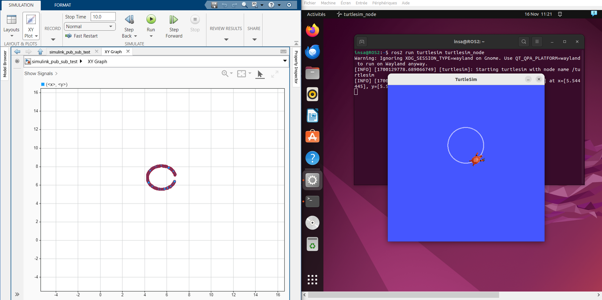Ceci conclut notre tutoriel sur Matlab et Simulink.
Annexes
Annexe 1 : Script pour envoyer et recevoir les infos en continu avec des scripts Matlab
Revenez au bon endroit dans le tuto !
clear;
defaultNode = ros2node("/default_Node");
twist = ros2message("geometry_msgs/Twist")
pose = ros2message("turtlesim/Pose");
twist.linear.x = 2;
twist.angular.z = 1.58;
Pub = ros2publisher(defaultNode,"/turtle1/cmd_vel","geometry_msgs/Twist");
Sub = ros2subscriber(defaultNode,"/turtle1/pose");
while(true)
pose = receive(Sub)
pause(0.3);
send(Pub,twist);
end
Annexe 2 : Script "printFeedback"
Revenez au bon endroit dans le tuto !
function printFeedback(goalHandle,resp)
theta = resp.remaining
fprintf("[Client] Feeback: Rotation absolue restante pour l'objectif %s est :[", goalHandle.GoalUUID);
fprintf(" %d",theta(1));
fprint(" ]\n")
end
Annexe 3 : Script "printResult"
Revenez au bon endroit dans le tuto !
function printResult(goalHandle,resp)
theta = resp.result.delta;
fprintf("[Client] Result: Rotation absolue totale pour l'objectif %s est :[", goalHandle.GoalUUID);
fprintf(" %d",theta(1));
fprint(" ]\n")
end